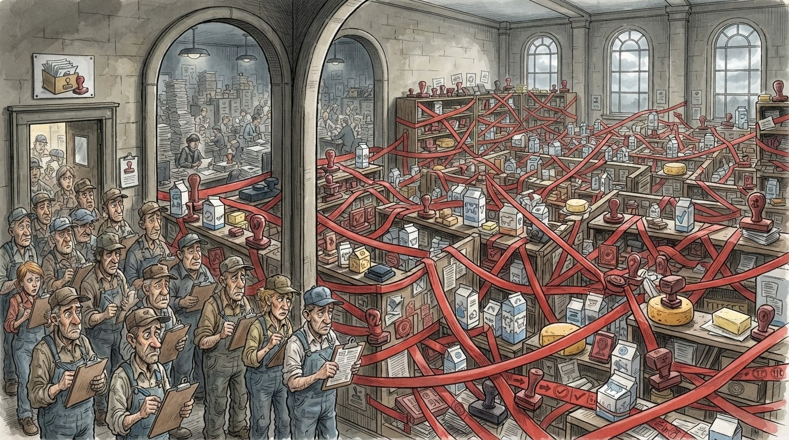

Ekonomi
Gazeta Satirike e Kosovës dhe Shqipërisë — lajme që nuk duhet t'i besoni, por i lexoni gjithsesi
Komisioni është formuar, check-lista është finalizuar, ekipet janë caktuar — mungon vetëm pjesa ku dikush del në terren.

Industria e qumështit ka arritur një etapë historike: check-lista për autorizim është finalizuar, komisioni është formuar, madje edhe kryesuesi është caktuar. Mungon vetëm një gjë e vogël — që dikush të shkojë fizikisht në qumështore dhe të verifikojë çka ka aty brenda.
"Jemi në fazën ku gjithçka është gati përveç veprimit", shpjegoi një prodhues, duke përshkruar në mënyrë të papërsosur gjithë sistemin institucional të vendit. Ndërkohë, produktet e larguara nga raftet po u afrohet skadimi i afatit — një lloj gare mes burokracisë dhe kalendarit, ku kalendari po fiton pa mundim.
"Ne kemi katër kërkesa, tri janë realizuar teorikisht — e katërta pret vetëm dikë që të lëvizë." — një përfaqësues i industrisë, duke përshkruar shkallën më të re të fizikës institucionale: lëvizja e ngrirë
Ndërsa prodhimi vendor pret autorizimin, raftet e marketeve nuk kanë mbetur bosh — janë mbushur me produkte të importuara që i ngjajnë shumë atyre vendore, thjesht me pak më shumë vulë dhe pak më pak burokraci pas tyre. Redaksia jonë e quan këtë "zëvendësim i drejtë, por i padrejtë".
Institucionet kompetente sigurojnë se procesi "do të fillojë më së largu të premten" — datë që, sipas kalendarit satirik zyrtar, është data më e cituar në Kosovë pas "më vonë".
Deri të premten, prodhuesit vendorë vazhdojnë të mbledhin qumësht që s'e dinë nëse do t'u lejohet ta përpunojnë — një pritje aq e gjatë sa vetë qumështi rrezikon të bëhet i pjekur para se dosja e tij.